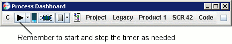

Step 4: Writing the code Step 4: Writing the code
Step 4: Writing the code Step 4: Writing the codeDuring software development, you will inevitably spend a sizeable amount of time in the coding phase. Even though you have your head down and your mind focused on code, don't forget to follow the disciplined PSP behaviors!
In particular, get into the habit of faithfully starting and stopping the timer. If you are interrupted during your work, just click the play/pause button. When the interruption ends, press the button again. The dashboard will automatically record rows in your time log to capture the time you are spending on the work.

If you forget to start or stop the timer, you can fix these mistakes with the time log editor.
Also, it is common when coding to discover defects that were injected in earlier phases. For example, you might find an error in your design. Use the defect button to record these defects as you find and fix them.
When we are done coding, we mark the phase complete and move on to code review. Of course, while reviewing the code, we faithfully log our time and defects. Finally, we mark the code review phase complete, and move on to the compile phase.